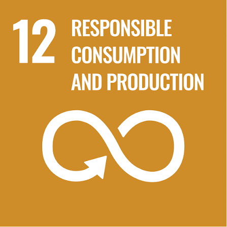
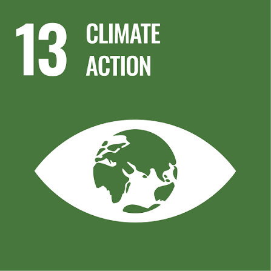
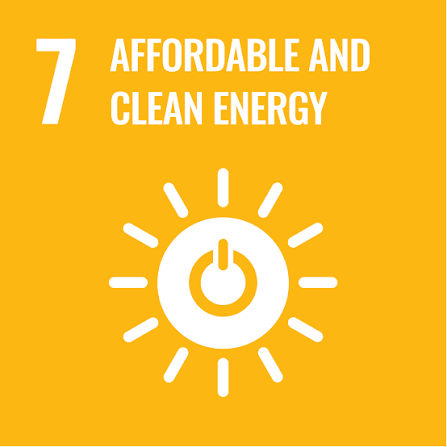
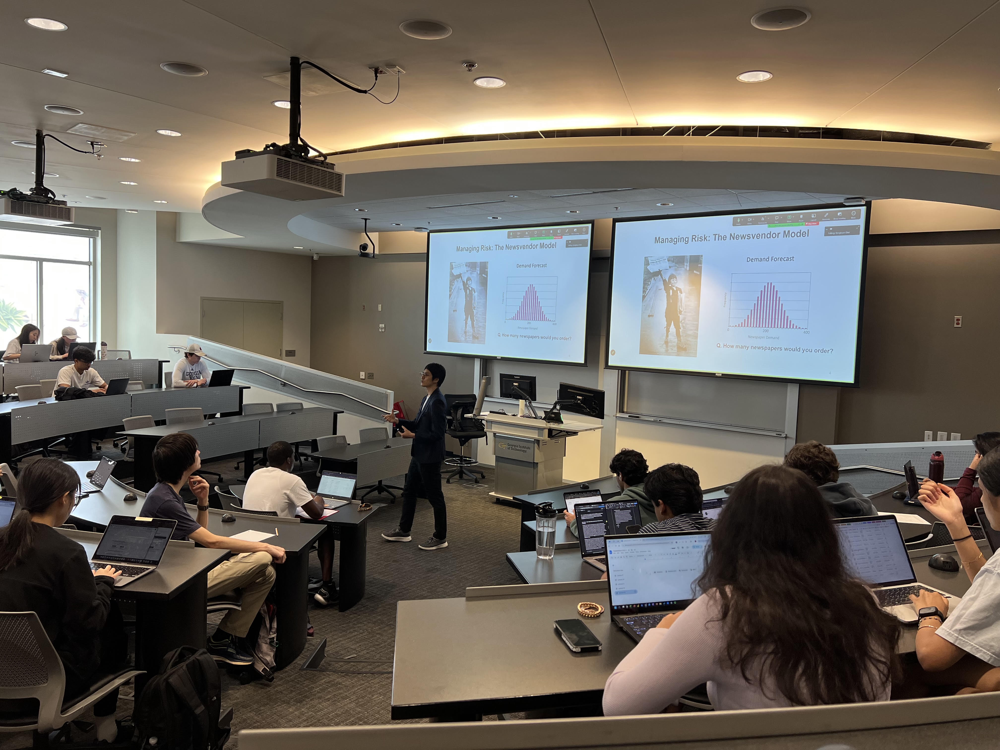

Working paper
Hi! I am Donghyun (Daniel) Choi, PhD Candidate in Operations Management at Georgia Institute of Technology, advised by André Calmon and Beril Toktay. My research investigates the operational implications of sustainability targets and provides managerial and policy insights using analytical modeling and empirical methods. Specifically, I am studying this in the context of packaging material recycling, corporate carbon targets, and energy system decarbonization. I was nominated as a Novelis Graduate Scholar and am closely working with companies in the Drawdown Georgia Business Compact. I am on the 2026–2027 academic job market.
Research
01
Material circularity
Producers using packaging materials such as plastic, aluminum, and paper face an expanding landscape of packaging extended producer responsibility (P-EPR) policies. Policymakers use a mix of levers, including producer fees, requirements that producer responsibility organizations meet recycling targets, and recycled-content mandates for packaging. In this stream, I study how material ownership and the funding structure of recycling systems can be designed to coordinate stakeholders. I also explore the role of advanced recycling technologies in recycling networks.
Work in progress
Ordered-Quality Process Flexibility in Recycling Networks

02
Business and Climate Change
Firms are working to decarbonize their operations and supply chains, which exposes them to carbon-transition risk. This risk reflects uncertainty across three closely linked dimensions: technological progress, policy stringency, and timing. In this stream of research, I study the role of slack resources in firms’ commitments to reduce carbon emissions and how markets perceive the climate risk of committed firms.
Under review
Slack and Science-Based Target Commitments
Work in progress
Coupled by Commitment? Science-Based Targets and Market-Perceived Climate Risk

03
Publication
Prior to my PhD studies, I studied energy-system transitions from technological and policy perspectives.
Choi, D., and Kim, Y. J. (2023). “Local and global experience curves for lumpy and granular energy technologies.” Energy Policy, 174, 113426.
DOI ↗Choi, D., Eom, J., and Cho, C. H. (2023). “Integrating Market and Technology Uncertainties into Levelized Costs of Power Generation Technologies: A Case of Korea.” Energy Strategy Reviews, 45, 101046.
DOI ↗Choi, D., Ahn, Y. H., and Choi, D. G. (2020). “Multi-Criteria Decision Analysis of Electricity Sector Transition Policy in Korea.” Energy Strategy Reviews, 29, 100485.
DOI ↗Kim, J. T., Cho, C. H., and Choi, D. (2019). “A CGE Analysis of Peak Load Pricing using Electricity Sector Detailed Database.” Korean Energy Economic Review, 18(2), 1–37.
PDF ↗Choi, D., Kasdan, D. O., and Yoon, D. K. (2019). “Analyzing Disaster Loss Trends: A Comparison of Normalization Methodologies in South Korea.” Risk Analysis, 39(4), 859–870.
DOI ↗

Teaching
Courses
Georgia Institute of Technology
Operations Management (MGT 3501)
- Spring 202660 studentsEvaluation: 4.77/5
- Summer 2025 (online)59 studentsEvaluation: 4.63/5
- Spring 202560 studentsEvaluation: 4.65/5
Korea Army Academy
- Business Statistics
- Management Science
- Decision Analysis
Recipient of the 2018 Best Teaching Award.

Testimonial from Operations Management Class
1 / 5
“He cared a lot about his students and making sure that they were able to understand what was going on in class.”
“He was incredibly passionate and was very caring for his students. I could tell that he really wanted what is best for everyone.”
“He took feedback very well and actually applied it toward our classroom environment, which was very impressive and did not go unnoticed.”
“The instructor’s greatest strength is making hard content easier to digest.”
“He taught the course effectively and kept the content relevant and engaging. You can tell he genuinely wanted to see students succeed.”
Contact